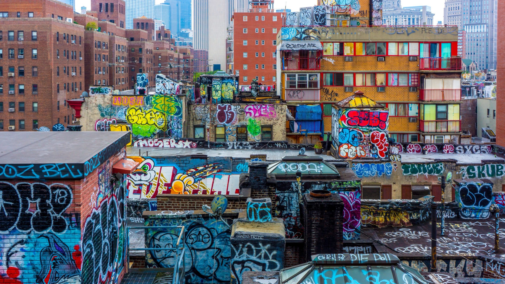

pronounced /kä(l)m/ (Spelled uniquely to signify the power we have with little resources,while 4 signifies knowledgeable and confident individuals with leadership skills.
At K4LM, our mission is to empower young Black males to express themselves through fashion and art aiming to give youth a sense of control over their personal expression.
Our vision for K4LM is to create a fashion movement where every young male not only feels comfortable in their clothes but also finds them to be a powerful form of self-expression. We aim to find a commonality while also empowering individuals through innovative streetwear that merges artistic creativity with everyday wearability. By offering a diverse range of hoodies—such as Mock-Neck, Oversized, Cropped, Mohair, Patched, and Vintage styles—we strive to provide to various fashion tastes and preferences, ensuring each piece carries a unique touch that resembles with personal style and identity. Through our designs, we seek to instill confidence, provide creativity, and inspire a community where fashion becomes a staple in not only their life but they produce that energy to others.
Hello I'm Kendrick Johnson, I have many different talents but the ones I highlight are basketball, designing, and my social awareness. Designing clothes to me is something that is overlooked and underrated. Growing up, my fascination with art defined my perspective on clothing. From a young age, I viewed clothing not just as fabric, but as a canvas awaiting creative expression. Each piece of clothing I encountered sparked my imagination—I saw potential to provide it with unique touches, transforming ordinary pieces into extraordinary fashion statements. Fashion became my escape place with endless opportunities and no boundaries. It not only gave me joy but it gave me so much freedom in my life and I enjoy producing that into the world. This passion led me to constantly innovate, blending new elements and ideas seamlessly into unique pieces. The pieces that I make are uniquely produced by the care and great condition that it takes to package and send off.

At K4LM, we transform the fashion experience for young males through artistic streetwear that goes beyond clothing. Our mission is to empower individuals by providing a creative platform where personal expression flourishes. We produce uniquely designed pieces that inspire and expresses the youth I a never seen before light.
At K4LM we strive to be not only the best but the rarest brands ever created. We want to be a place to go to for uniqueness and expression.
We do intensive research on what would keep our customers happy and try to provide something that intrigues them while also staying on task with our mission/goal.